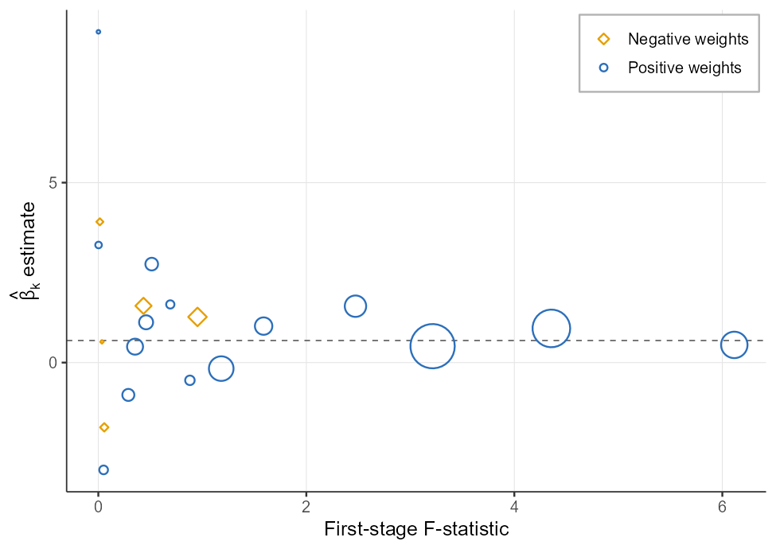
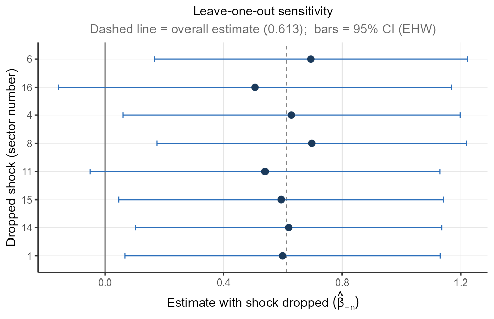
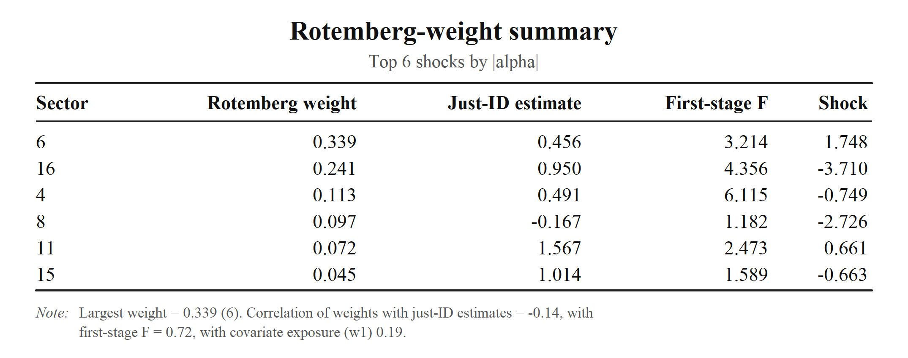
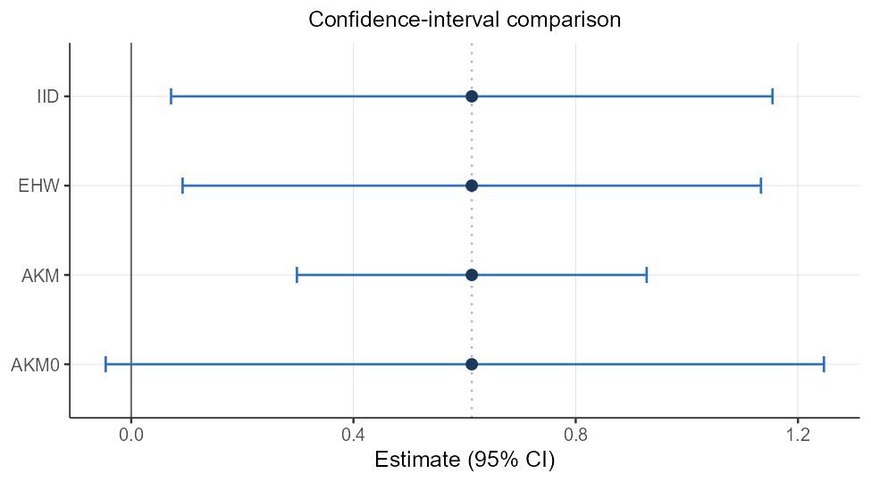
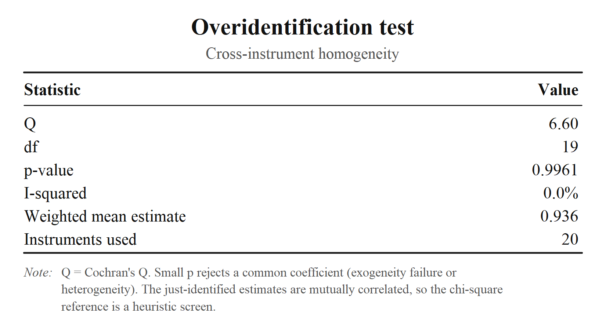
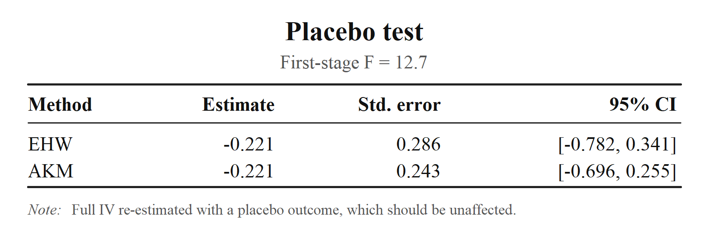
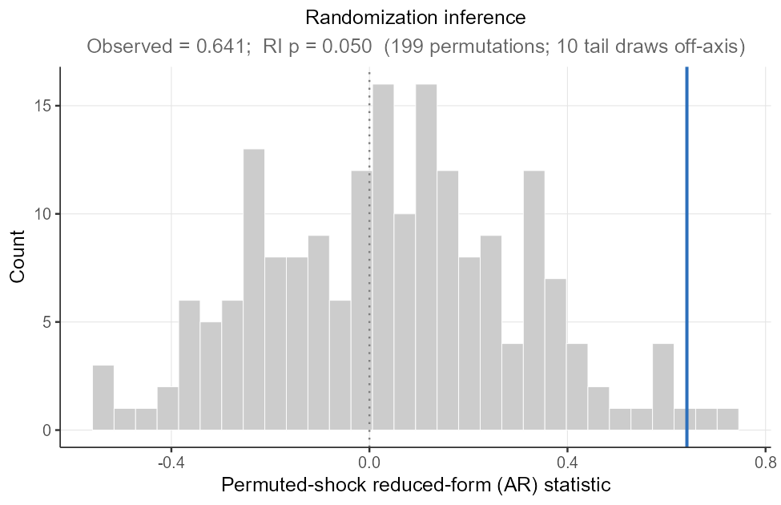
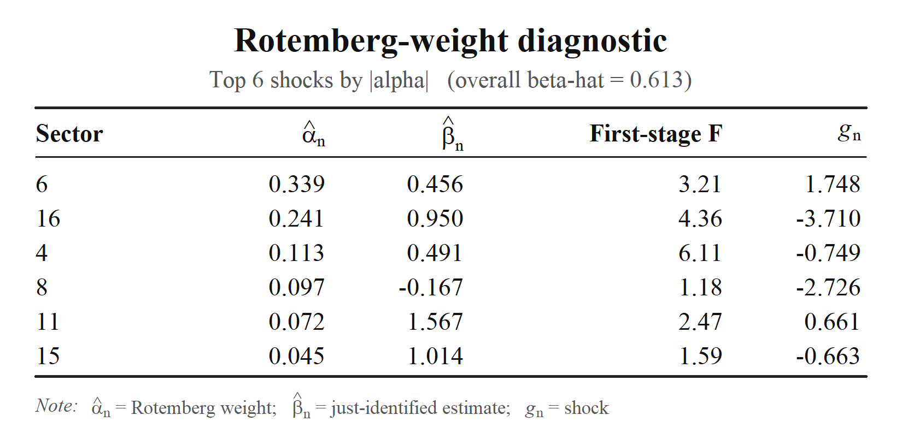
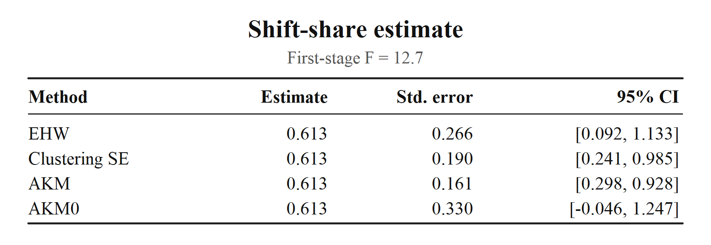
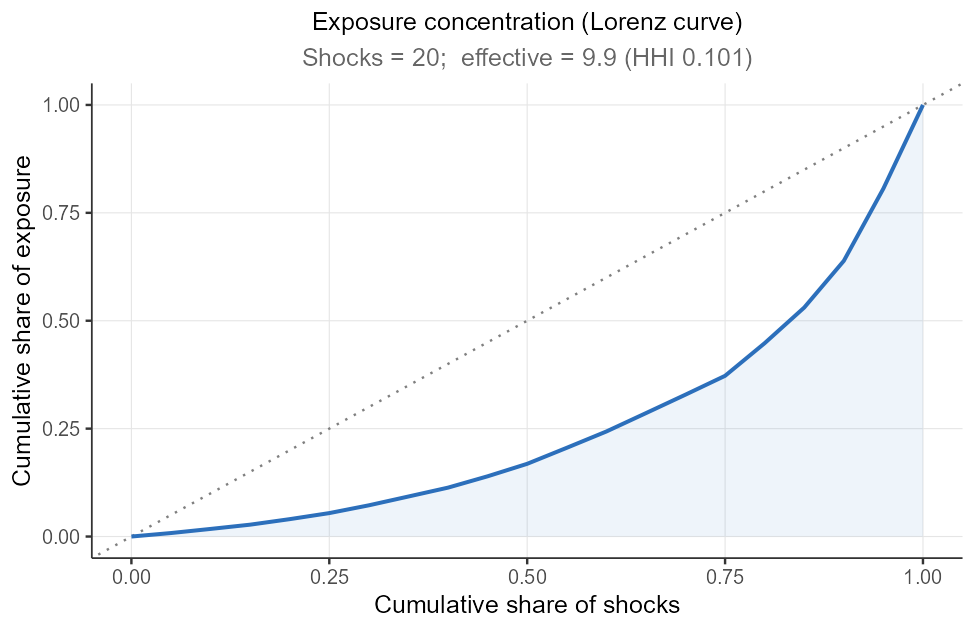

Shift-share / Bartik IV analysis in R is currently spread across several single-purpose tools, each of which has its own data conventions. ssBartik connects those steps into one consistent workflow: (a) construct variables → (b) diagnose → (c) estimate → (d) infer → (e) visualize, organized around the two identification routes of the modern literature (i.e., exogenous shift and exogenous share approaches).
Once you pick the identification route with a single argument (exogenous = "share" or "shift"), everything downstream follows through simple functions.
Headline visualizations and tables
ssBartik turns estimation and diagnostic results into publication-ready figures and tables. The examples below demonstrate some of the package’s main outputs using sample datasets. The first model figure follows visualization in Goldsmith-Pinkham, Sorkin, and Swift (2020).



Install
# install.packages("remotes")
remotes::install_github("takuma1102/ssBartik")ShiftShareSE by Prof. Michal Kolesár (for AKM/AKM0 inference) is optional and used when installed.
One-call pipeline
The ssBartik function builds the dataset for shift-share IV analysis, runs the full pipeline, and produces results regarding a CI comparison between AKM/AKM0 and conventional methods, a calculation of the effective F, an overidentification test, Rotemberg weights, a pre-trend test, a placebo analysis, and an LOO analysis.
The two routes
The instrument z_i = Σ_n s_{in} g_n is constructed identically whichever route you take. The exogenous flag governs which diagnostics and controls apply:
| step |
exogenous = "share" (GPSS) |
exogenous = "shift" (AKM, BHJ) |
|---|---|---|
| headline diagnostic | Rotemberg weights + figure | effective shocks / exposure concentration |
| credibility check | share balance vs. observables | shock balance vs. characteristics |
| cross-instrument | overidentification across β_k | location ↔︎ shock IV equivalence |
| pre-period / placebo | pre-trend + placebo outcome | pre-trend + placebo outcome |
| robustness | leave-one-out, drop-top-n, randomization inference | leave-one-out, drop-top-n, randomization inference |
| extra control | — | sum-of-shares (auto, when incomplete) |
| inference | EHW / AKM / AKM0 (cluster, two-way on request) | EHW / AKM / AKM0 (cluster, two-way on request) |
Step-by-step analysis
With a design in hand, each credibility check is finished through a single call.
d <- ssb_design(df$data, df$shares, df$shocks,
controls = "w1", weights = "pop", exogenous = "share")
rot <- ssb_rotemberg(d) # Rotemberg-weight decomposition
plot(rot, n = 6) # see below
est <- ssb_estimate(d) # IID / EHW / AKM / AKM0 (add cluster/two-way on request)
ssb_plot_ci(est)
# instrument strength & internal consistency
ssb_first_stage(d) # standard robust F + exposure-robust "effective" F
ssb_equivalence(d) # location-level SSIV == shock-level IV (sanity check)
ssb_overid(d) # do the per-share estimates agree? (Cochran's Q)
# identifying-assumption checks
ssb_shock_balance(d, shock_covariates = sc) # shocks vs. pre-determined characteristics
ssb_pretrend(d, pre_y = "y_pre") # does exposure predict pre-trends?
ssb_placebo(d, placebo_y = "y_plac") # full IV on an outcome that shouldn't move
ssb_ri(d, R = 999, block = "grp") # AR-style randomization inference (shocks permuted within blocks)
# sensitivity to influential shocks
ws<- ssb_weight_summary(d, covariates = "w1") # who carries the weight? (α vs. βₖ, F, covariates)
plot(ws)
ssb_drop_top(d, n = 5) # re-estimate without the top-weight shocks
ssb_recenter(d, method = "permute", block = "grp") # block-wise recentering (within-block mean shock)Each returns a small object with a readable print() method; the same checks run automatically inside ssbartik() / ssb_pipeline() when you pass the corresponding arguments (pre_y, placebo_y, shock_covariates, covariates).
Function map
Construct
| function | purpose |
|---|---|
ssb_design() |
define a shift-share design (entry point) |
ssbartik() / ssb_pipeline()
|
one-call pipeline (from raw data / from an existing design) |
Diagnose
| function | purpose |
|---|---|
ssb_rotemberg() |
Rotemberg-weight decomposition (+ format()/plot() paper table) |
ssb_weight_summary() |
Rotemberg-weight summary + correlations (α vs. βₖ, F, covariates) |
ssb_shock_summary() |
effective number of shocks, exposure concentration |
ssb_first_stage() |
first-stage strength: standard & exposure-robust (effective) F |
Note The Rotemberg decomposition is the headline credibility table of the exogenous-shares approach (Goldsmith-Pinkham, Sorkin & Swift 2020): it shows which shocks the estimate leans on and whether their just-identified estimates agree.
ssb_rotemberg()prints a console summary by default, and exports a publication-quality table of the top-weight shocks on demand:
rot <- ssb_rotemberg(d)
print(rot) # console summary (default)
writeLines(format(rot, "latex")) # paste-ready booktabs LaTeX
writeLines(format(rot, "markdown")) # GitHub pipe table
print(rot, format = "latex", n = 8) # same, straight from print()
plot(rot, file = "rotemberg_table.png") # compact booktabs image (.png/.pdf); see belowEstimate & infer
| function | purpose |
|---|---|
ssb_estimate() |
point estimate + confidence intervals: IID/EHW/AKM/AKM0 by default, cluster/two-way on request (+ format() paper table) |

| function | purpose |
|---|---|
ssb_aggregate() / ssb_shock_iv()
|
shock-level aggregation and shock-level IV |
ssb_equivalence() |
location-level ↔︎ shock-level IV equivalence check |
Credibility & robustness checks
| function | purpose |
|---|---|
ssb_overid() |
overidentification / cross-instrument homogeneity test |
ssb_share_balance() |
share-vs-observables balance (share route) |
ssb_shock_balance() |
shock-vs-characteristics balance (shift route) |
ssb_pretrend() |
pre-trend test (reduced form of a pre-period outcome on the instrument) |
ssb_placebo() |
placebo-outcome test (full IV on an outcome that should not move) |
ssb_ri() |
randomization inference (Anderson-Rubin-style placebo shocks) |
ssb_loo() |
leave-one-sector-out sensitivity |
| function | purpose |
|---|---|
ssb_drop_top() |
re-estimate after dropping the top-weight shocks together |
ssb_recenter() |
recentering — demean or block-wise permute (Borusyak & Hull) |
Visualize
| function | purpose |
|---|---|
ssb_plot_rotemberg() / ssb_plot_ci()
|
Rotemberg bubble chart / confidence-interval comparison |
ssb_plot_loo() / ssb_plot_ri()
|
leave-one-out sensitivity / randomization-inference null |
ssb_plot_overid() / ssb_plot_shocks()
|
just-identified estimate dispersion / exposure Lorenz curve |

| function | purpose |
|---|---|
autoplot() |
method for any of the figures above |
Note 1:
ssb_plot_rotemberg()reproduces the canonical Goldsmith-Pinkham–Sorkin–Swift diagnostic: each sector’s just-identified estimate against its first-stage F-statistic, bubble area proportional to the absolute Rotemberg weight, positive weights as blue open circles and negative as amber open diamonds, with the overall estimate marked by the dashed line.
Note 2:
ssb_plot_ci()puts the point estimate next to every method’s interval, with the axis always including the null at 0, so both the practical cost of the exposure-robust correction and each method’s verdict on significance are immediate. The comparison is of intervals: AKM0 is defined directly as a (possibly asymmetric) interval, so it is the interval — not a standard error — that matters. (In this example the naive/EHW interval excludes 0 while AKM0 does not.)
Status
Experimental, but the output schema is intended to be stable. Pin package versions in production code.
Acknowledgements
When developing ssBartik, I gratefully referenced tools built by others: ShiftShareSE (Michal Kolesár), ssaggregate (Kyle Butts), bartik.weight (JJ Chern), and bartik-weight (Paul Goldsmith-Pinkham for Stata and R). Kudos to their authors for making these ideas legible and reproducible.
To keep the package lightweight and close to base R, ssBartik depends on only ShiftShareSE, listed under Suggests and called solely for the AKM / AKM0 exposure-robust standard errors. The other three packages above are neither imported nor called. They served purely as references and the functionality they built is reimplemented natively in ssBartik in base R so that external dependencies stay minimal.
Citation
Please also cite whichever underlying methods and tests you actually used.
- Adão, Kolesár & Morales (2019), Shift-Share Designs: Theory and Inference, QJE.
- Borusyak, Hull & Jaravel (2022), Quasi-Experimental Shift-Share Research Designs, REStud.
- Borusyak and Hull (2026) Optimal formula instruments, Econometrica (forthcoming).
- Borusyak, Hull & Jaravel (2025), A Practical Guide to Shift-Share Instruments, Journal of Economic Perspectives.
- Borusyak, Hull & Jaravel (2025), Design-based identification with formula instruments: a review, The Econometrics Journal.
- Goldsmith-Pinkham, Sorkin & Swift (2020), Bartik Instruments: What, When, Why, and How, AER.